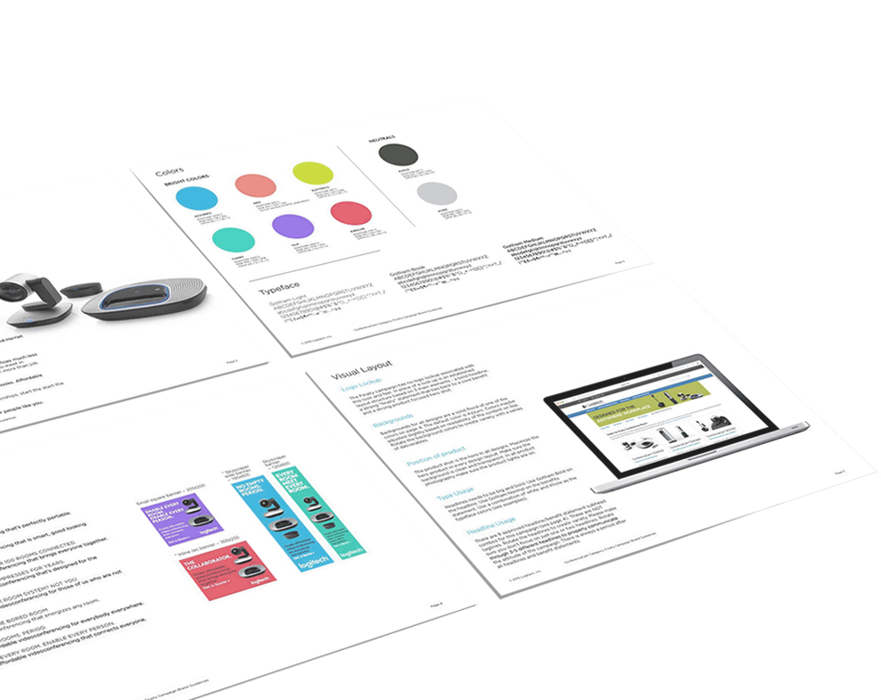

Client: Logitech
Duration: 2015~2016
Team: Content Strategists, Developers, Designers, Marketing Specialists
my role: lead Visual Design
Design Process
Creating Communications
with Impact
Our work initiated with strategy and content: having gained an understanding of our primary and secondary audiences, the team created audience-specific messaging and communications. The visual builds upon this work and brings everything to life through bold headlines, vibrant colors, and beautiful product shots. The tone is witty, charming and even somewhat alarming, so the business person understands Logitech truly gets their world.
Brand guideline for Finally Campaign
Testing & Optimizing
To optimize the performance of communications, we collected feedbacks using a variety of tools such as heat maps and A/B testing. We used heat maps to track visitor interactions of the landing page, and A/B testing to track a variety of factors, such as: If seasonality played a role in results? Which performs best: product or lifestyle imagery? What headlines resonated: pain-point or benefit based?
Outcome & Press
Two month results:
Over 8M impressions / Banner ads performed 3X as compared to previous campaigns / Social campaign performed 4X as compared to previous campaigns / CTA, CPL, CTR and most metrics performed well above comparable campaigns / Brought the price per qualified lead down over 25% / 10x captured leads as compared to previous campaigns / Currently signed $1.6M in sales directly from this campaign (expected est. +$8M)
Read more about the success of Finally Campaign here:
Logitech Has Quietly Become a Big Deal on Videoconferencing
Fast Company
You Might Also Like
improving a leading enterprise software
Designing for value co-production via mobile
© 2016 made by angel shi yao Yu